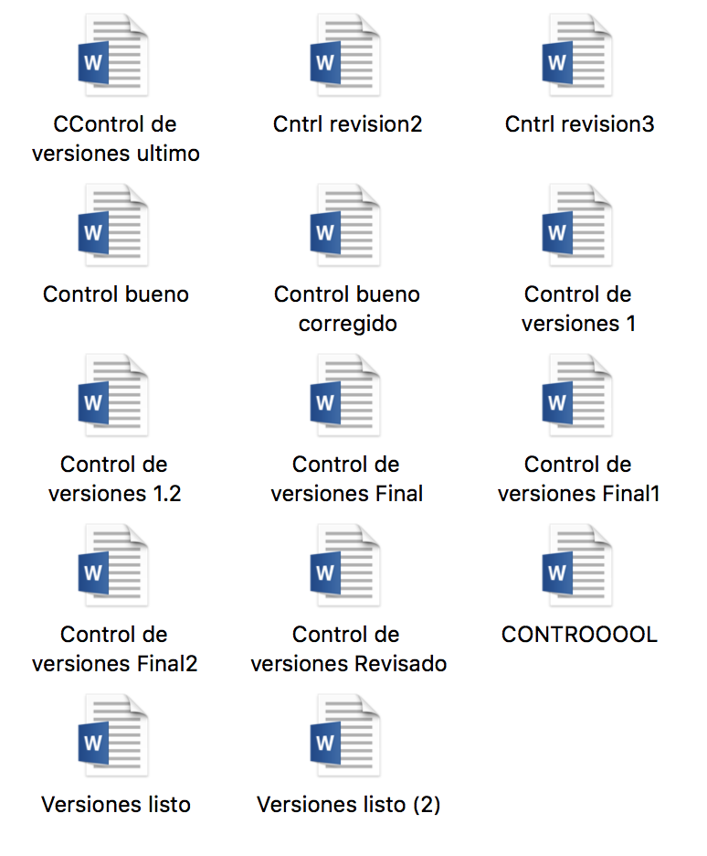
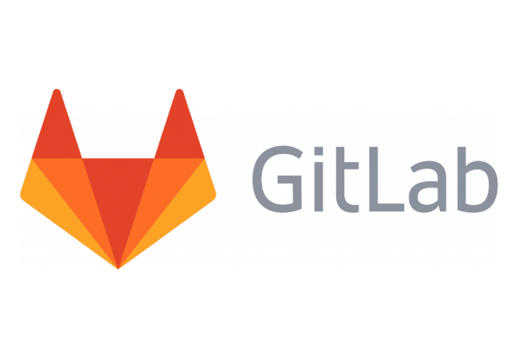

El Control de Veriones
y Git
Por: Ing. Emmanuel Prin
¿Qué es Control?
“Examen u observación cuidadosa que sirve para hacer una comprobación.” Segun: Google
¿Qué es Versión?
“Presentación revisada de una obra o producto que mantiene sus características esenciales.” Segun: Spanish Oxford Living Dictionaries
¿Qué es el Control de Versiones?
“El control de versiones es un sistema que registra los cambios realizados sobre un archivo o conjunto de archivos a lo largo del tiempo.”
Segun: Git SCM
¿Como controlas tu las versiones?
Pendrive...
Correo..
Google Drive...
Otros medios...
O tal vez...
Brevemente ¿Qué es Git?
Git es un software de control de versiones diseñado por Linus Torvalds, pensando en la eficiencia y la confiabilidad del mantenimiento de versiones de aplicaciones.
Git nace en el 2005, impulsada por la comunidad de software libre sus principales características son:
- Velocidad
- Diseño Sencillo
- Fuerte apoyo al desarrollo no lineal
- Completamente Distribuido
- Capacidad de manejar grandes proyectos
¿Como Trabaja Git?


Manejadores de Repositorios Remotos
GitHub
GitLab

Bitbucket
Mi Experiencia con Git
Muchas Gracias por su Atención
Diapositivas Realizadas con Reveal.Js
Disponibles en GitHub: Hechizero15/presentacionGit